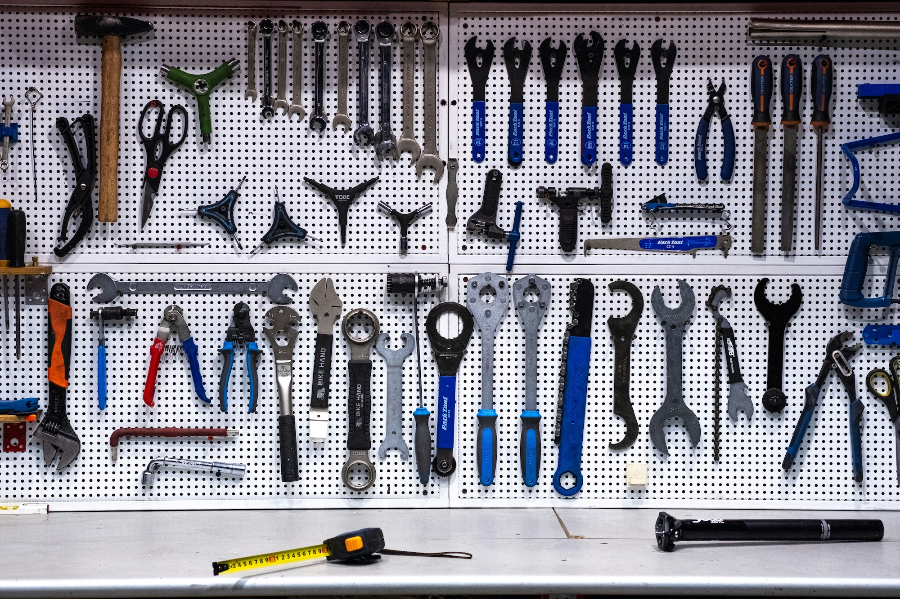

Frequently Asked Questions
-
When you add a bicycle to BikeVet, the app creates a virtual replica — a digital twin — of your real bike. Every component you register (frame, wheels, drivetrain, brakes, etc.) is tracked independently. As you log rides and maintenance, the twin updates in real time so you always know the exact state of your bike.
-
BikeVet offers a generous free tier that lets you manage one bicycle with all core features. For riders with multiple bikes or who want advanced analytics and priority support, we offer an optional Pro subscription available as a monthly or yearly plan.
-
Absolutely. You can export your full bike profile, component history, and service logs as a structured file at any time from the Settings screen. Your data is yours — we believe in full portability and transparency.
-
BikeVet is currently available on iOS (iPhone and iPad). We're actively exploring an Android version and a companion web dashboard — stay tuned by following us for updates.